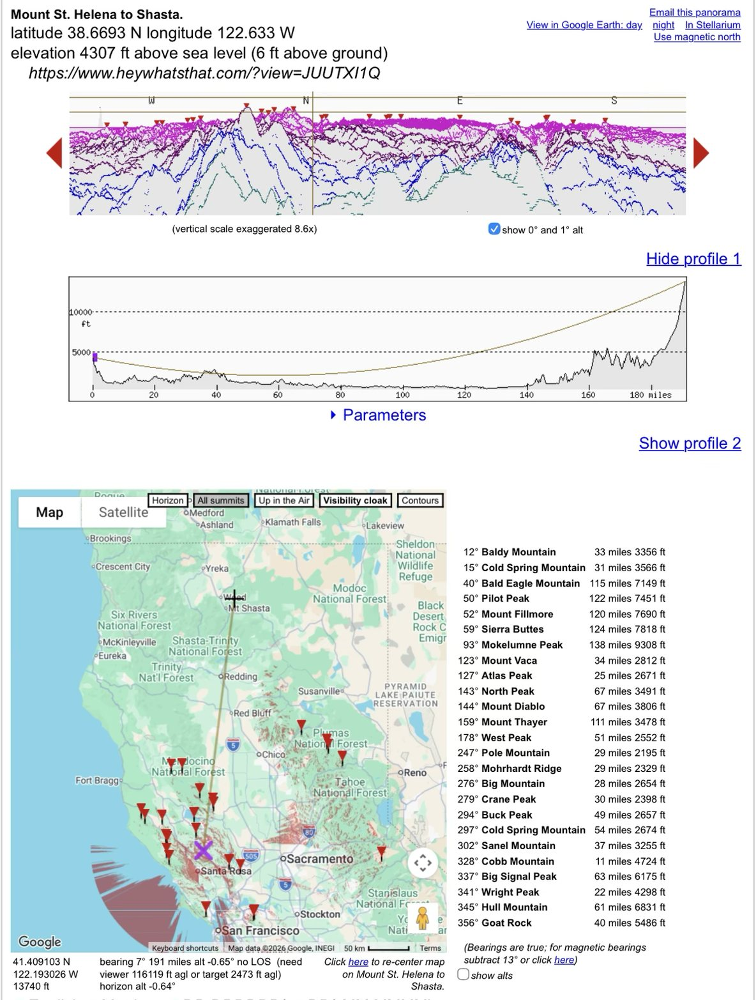

The largest triangle the Survey ever observed. Its longest side runs 306.5 km from Mount Shasta to Mount Saint Helena. Below it is drawn to true scale against a flat chord, then stretched vertically so you can watch the bulge appear.
| Station | Lat °N | Lon °W | Height m | Angle |
|---|---|---|---|---|
| Sum |
On a plane the three angles would sum to 180°. On the ellipsoid they sum to 180° plus 142.7″ of spherical excess, which equals the triangle's area (28 107 km²) divided by the Gaussian curvature radius squared.
The red line is the straight chord between the sea-level points under each summit. The brown line is the ellipsoid surface. The blue line is the straight sightline from summit to summit. At 1× nothing is exaggerated.
The stretch multiplies every height by the same factor. That is an affine map, so straight lines stay straight and the chord stays flat. Only the proportions change.
At the midpoint the surface stands 1 842 m above the flat chord, taller than Mount Saint Helena itself (1 323 m). The summit-to-summit sightline clears the surface by about 674 m at its lowest point, 216 km from Shasta (868 m with standard refraction, k = 0.13).
| Side | Arc km | Arc mi | Reported mi | Arc − chord m | Sagitta m | Tangent drop km |
|---|
Tangent drop is how far the far station lies below a flat horizontal plane laid at the near station, s²/2R, which is exactly four times the sagitta.
Modern accounts say Shasta can still be seen from Mount Saint Helena. California State Parks says the top of Shasta can be seen "192 miles in the distance" on good days, and a hiking guide says Shasta and Lassen may be spotted on a very clear day. Neither shows a photo.
Status: anecdotal only. I found no published photograph, historic or recent, of Shasta taken from Saint Helena or Lola, or of either peak from Shasta. The 1879 observation is documented in words: Colonna's report of seeing the Helena heliotrope. Over a bare ellipsoid the summit-to-summit ray clears by 674 m (868 m with k = 0.13). With real terrain the margin is close to zero, as below.

| From Saint Helena, k ≈ 0.14 | Apparent altitude |
|---|---|
| Skyline at bearing 7° (HeyWhatsThat) | −0.64° |
| Shasta in the SRTM model (13 740–13 802 ft) | −0.65° |
| True Shasta summit (14 179 ft), ellipsoid calculation | ≈ −0.63° |
| Ridge near Hough Springs, 40 mi, bearing 6°40′ | −0.50° |
Finding: at standard refraction the tip of Shasta sits on the horizon from Saint Helena, within about ±0.02° (display rounding, SRTM clipping of the summit by ~380 ft, and the saddle height at 40 miles). That is a few tens of metres of mountain at 190 miles. The 40-mile Coast Range saddle sets the horizon; everything farther out lies well below the ray. Whether Shasta shows depends on the day: a modest rise in refraction above standard lifts a sliver into view, consistent with the "on good days" accounts.
Geodesics, angles and area were computed on WGS84 with GeographicLib. Curvature radius is the Gaussian mean √(MN) at each side's mid-latitude.
| Source of error | Assumed 1σ | Effect on 1 842 m sagitta |
|---|---|---|
| Station positions (summit coordinates, not NGS marks) | ±100 m | ±1.2 m |
| Side length: 1879 reported vs computed (169/192 mi vs 167.0/190.5) | ±2.4 km | ±29 m |
| Ellipsoid choice (WGS84 vs Clarke 1866) | ΔR ≈ 100 m | ±0.03 m |
Finding: taking the worst listed term as 1σ, the sagitta is 1 842 ± 29 m. A flat baseline (sagitta 0) sits about 63σ away. This is an inductive result that depends on the side length and on R from the ellipsoid model. The open item is replacing summit coordinates with the published station positions, which may explain the 1.5 mi gap against Colonna's reported distances.